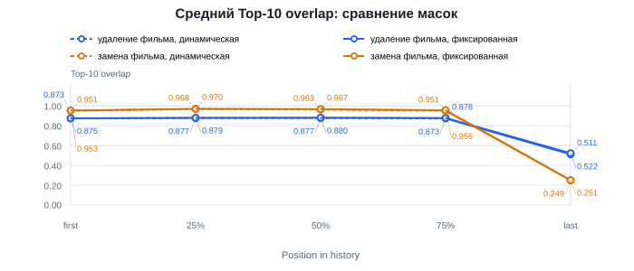
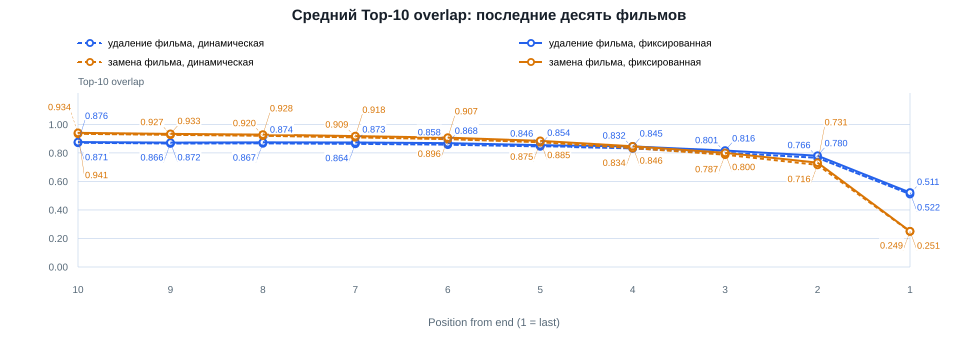
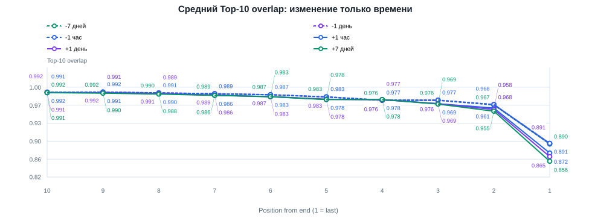
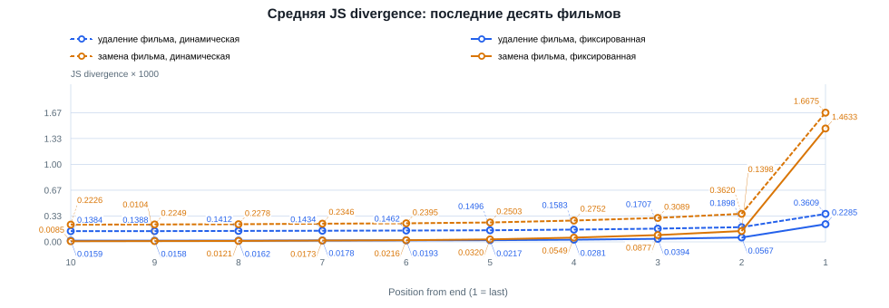
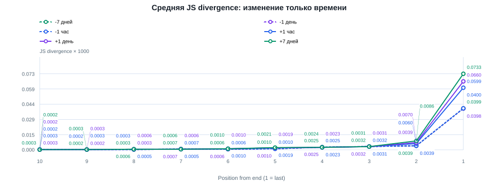
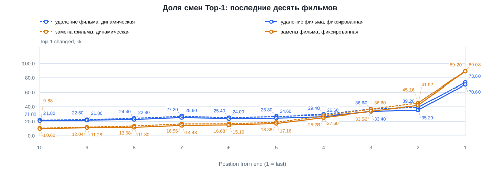
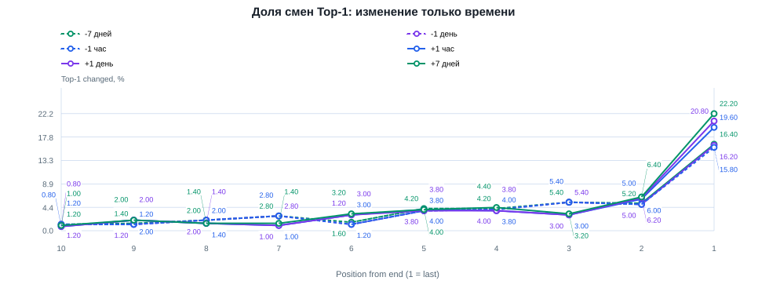
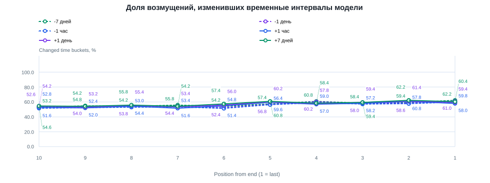
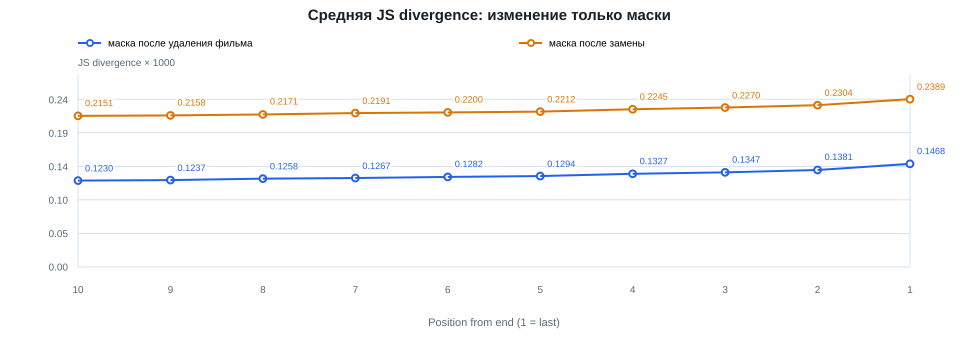

Контролируемая чувствительность HSTU
Числа у точек показывают средние значения метрик. Повторы замен сначала усреднены внутри пользователя. На графиках времени сохранены случаи ограниченного и нулевого фактического сдвига.
legacy_topk_overlap

tail_topk_overlap

timestamp_tail_topk_overlap

legacy_js_divergence

tail_js_divergence

timestamp_tail_js_divergence

legacy_top1_changed

tail_top1_changed

timestamp_tail_top1_changed

timestamp_bucket_coverage

mask_only_tail_js
